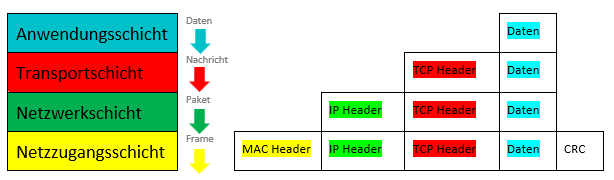

Dein Browser muss nicht wissen, ob die Webseite über WLAN, Glasfaser oder ein Seekabel kommt – und das WLAN muss nicht wissen, dass es gerade eine Webseite transportiert. Möglich wird das durch Schichtenmodelle: Jede Schicht löst genau eine Teilaufgabe und nutzt dafür die Dienste der Schicht darunter.
Schichtenmodelle dienen dazu, Netzwerkprotokolle und die Kommunikation über ein Netz zu organisieren und zu standardisieren. Sie teilen die Netzwerkarchitektur in hierarchische Schichten auf, wobei jede Schicht eine bestimmte Funktion erfüllt. Dieser modulare Aufbau reduziert die Komplexität, verbessert die Zusammenarbeit (Interoperabilität) verschiedener Systeme, erleichtert Wartung und Entwicklung und vereinfacht die Fehlersuche.
Die Nutzung von Schichtenmodellen bietet mehrere Vorteile:
Abstraktion: Jede Schicht verbirgt die Komplexität der darunterliegenden Schichten, wodurch Entwicklung und Analyse einfacher werden.
Modularität: Änderungen in einer Schicht erfordern in der Regel keine Änderungen in anderen Schichten, was Entwicklung und Test vereinfacht.
Standardisierung: Schichtenmodelle fördern internationale Standards und sichern so die Kompatibilität zwischen verschiedenen Geräten und Programmen.
Fehlerisolierung: Probleme lassen sich leichter einer bestimmten Schicht zuordnen und beheben.
Das OSI-Schichtenmodell
Das OSI-Modell (Open Systems Interconnection Model) ist ein theoretisches Referenzmodell, das die Kommunikation in einem Netz in sieben Schichten unterteilt. Es wurde von der Internationalen Organisation für Normung (ISO) entwickelt, um die Netzwerkkommunikation zu standardisieren. Die sieben Schichten sind (von oben nach unten):
Anwendungsschicht (Application Layer): Bereitstellung von Netzwerkdiensten für Anwendungen.
Darstellungsschicht (Presentation Layer): Übersetzung, Verschlüsselung und Komprimierung von Daten.
Sitzungsschicht (Session Layer): Verwaltung von Kommunikationssitzungen zwischen Anwendungen.
Transportschicht (Transport Layer): Ende-zu-Ende-Übertragung zwischen Prozessen auf den Endsystemen, auf Wunsch zuverlässig.
Vermittlungsschicht (Network Layer): logische Adressierung und Wegbestimmung (Routing) der Pakete durch das Netz.
Sicherungsschicht (Data Link Layer): Übertragung von Frames zwischen zwei direkt verbundenen Knoten, Fehlererkennung.
Bitübertragungsschicht (Physical Layer): Übertragung der einzelnen Bits als Signale über ein Medium.
Das TCP/IP-Schichtenmodell
Das TCP/IP-Modell ist ein vereinfachtes Schichtenmodell, das für das Internet entwickelt wurde. Es besteht aus vier Schichten, die mehrere OSI-Schichten zusammenfassen (von oben nach unten):
Anwendungsschicht (Application Layer): stellt die Schnittstelle für Anwendungsprogramme bereit, z. B. per HTTP, HTTPS, DNS oder SMTP (→ 7.10).
Transportschicht (Transport Layer): ermöglicht die Kommunikation zwischen Prozessen auf den Endsystemen mit Protokollen wie TCP und UDP (→ 7.9).
Internetschicht (Internet Layer): verantwortlich für die Adressierung mit IP-Adressen und die Wegfindung (Routing) der Pakete (→ 7.5).
Netzzugangsschicht (Network Access Layer): zuständig für die Übertragung über das konkrete Medium im lokalen Netz. In der Praxis kommen vor allem Ethernet (Kabel) und IEEE 802.11 (WLAN) zum Einsatz (→ 7.4).
Hybrides Schichtenmodell
In der Praxis hat sich die Aufteilung der Anwendungsschicht (Schicht 4 des TCP/IP-Modells) in die OSI-Schichten 5 bis 7 nicht durchgesetzt; an vielen Stellen benötigt man diese Trennung nicht. Dafür teilt man die Netzzugangsschicht (Schicht 1 des TCP/IP-Modells) meist in zwei Schichten auf, weil hier zwei verschiedene Arbeitsschritte stattfinden: die Signalübertragung und die Frame-Bildung. Daraus ergibt sich das hybride Schichtenmodell, das die heutige Aufteilung in Netzen am besten widerspiegelt:
Anwendungsschicht (Application Layer): Schnittstelle für Anwendungsprogramme, z. B. HTTP oder HTTPS.
Transportschicht (Transport Layer): Kommunikation zwischen Prozessen auf den Endsystemen mit TCP und UDP.
Vermittlungs- bzw. Internetschicht (Network Layer): Adressierung und Wegfindung der Pakete.
Sicherungsschicht (Data Link Layer): Übertragung von Frames zwischen zwei direkt verbundenen Knoten.
Bitübertragungsschicht (Physical Layer): physikalische Übertragung der Bits über das Medium.
OSI
TCP/IP
Dateneinheit (PDU)
Beispiele
Geräte
7 Anwendung, 6 Darstellung, 5 Sitzung
4 Anwendung
Daten / Nachricht
HTTP, DNS, SMTP, DHCP
–
4 Transport
3 Transport
Segment (TCP), Datagramm (UDP)
TCP, UDP
–
3 Vermittlung
2 Internet
Paket (IP-Datagramm)
IPv4, IPv6, ICMP
Router
2 Sicherung
1 Netzzugang
Frame (Rahmen)
Ethernet, WLAN (802.11)
Switch, Access Point
1 Bitübertragung
Bits / Signale
Kabel, Funk, Licht
Hub, Repeater, Modem

Abb. 1: Aufbau eines Datenpakets durch Kapselung. Hinweis: Die Dateneinheit der Transportschicht heißt korrekt Segment (TCP) bzw. Datagramm (UDP), die Schicht darunter im TCP/IP-Modell Internetschicht.
Beispiel 1: Ein Brief im Briefumschlag im Paket einfach
Du schreibst einen Brief (Anwendung), steckst ihn in einen Umschlag mit dem Namen des Empfängers (Transport: welcher Prozess bzw. welche Person?), gibst ihn in ein Paket mit der Hausadresse (Internet: welcher Rechner?) und übergibst es dem Boten für die nächste Etappe (Netzzugang: welcher nächste Knoten?). Jede Ebene liest nur ihre eigene Beschriftung.
Beispiel 2: Ein Paket durch alle Schichten – mit MAC-Wechsel am Router komplex
Laptop A (192.168.0.10/24, Standard-Gateway 192.168.0.1) ruft eine Webseite auf dem Webserver S (192.168.1.20) in einem anderen Netz ab. Dazwischen liegt Router R mit den Schnittstellen eth0 (192.168.0.1) und eth1 (192.168.1.1).
Anwendung: Der Browser erzeugt die Anfrage GET /index.html HTTP/1.1.
Transport: TCP verpackt sie in ein Segment mit Quellport 50123 (vom Betriebssystem gewählt) und Zielport 80.
Internet: IP ergänzt Quell-IP 192.168.0.10 und Ziel-IP 192.168.1.20. A stellt per AND-Verknüpfung mit der Subnetzmaske fest (→ 7.6), dass das Ziel nicht im eigenen Netz liegt. Das Paket muss also zum Standard-Gateway.
Netzzugang: A ermittelt per ARP die MAC-Adresse von 192.168.0.1 (→ 7.4) und baut einen Ethernet-Frame an den Router.
Router R: R entfernt den Frame, liest die Ziel-IP, findet in seiner Routingtabelle das direkt angeschlossene Netz 192.168.1.0/24 an eth1 (→ 7.5), verringert die TTL um 1, ermittelt per ARP die MAC-Adresse von S und baut einen neuen Frame.
Webserver S: packt Schicht für Schicht aus: Frame → IP-Paket → TCP-Segment → HTTP-Anfrage an den Webserverprozess auf Port 80.
Abschnitt
Quell-MAC
Ziel-MAC
Quell-IP
Ziel-IP
Ports
A → R
MAC von A
MAC von R (eth0)
192.168.0.10
192.168.1.20
50123 → 80
R → S
MAC von R (eth1)
MAC von S
192.168.0.10
192.168.1.20
50123 → 80
Ergebnis: Die MAC-Adressen gelten nur für einen Abschnitt und werden an jedem Router neu gesetzt. IP-Adressen und Ports bleiben auf dem ganzen Weg gleich (solange kein NAT im Spiel ist, → 7.5).
Alltag: „WLAN verbunden, aber kein Internet“ – das Handy meldet damit, dass die unteren Schichten funktionieren (Funkverbindung zum Router steht), aber weiter oben etwas fehlt: keine gültige IP-Adresse, kein erreichbares Gateway oder kein funktionierender DNS-Server.
Beruf: Im IT-Support (typische Tätigkeit von Fachinformatikerinnen und Fachinformatikern für Systemintegration) werden Störungstickets oft „bottom-up“ entlang der Schichten bearbeitet: Leuchtet die LED am Netzwerkanschluss (Schicht 1)? Bekommt der Rechner eine IP-Adresse (ipconfig)? Antwortet das Gateway auf ping? Funktioniert die Namensauflösung (nslookup)? Erst dann liegt der Fehler in der Anwendung. So wird ein Ticket wie „Internet geht nicht in Raum 204“ systematisch eingegrenzt, statt auf Verdacht Einstellungen zu ändern.
Das Wichtigste
Kapselung – Beim Senden fügt jede Schicht den Daten der Schicht darüber einen eigenen Header hinzu (die Netzzugangsschicht zusätzlich eine Prüfsumme am Ende). Beim Empfänger entfernt jede Schicht ihren Header wieder und gibt den Rest nach oben weiter. Jede Schicht kommuniziert dabei logisch nur mit derselben Schicht auf der Gegenseite.
Grundaufgaben
Aufgabe 7.3.1: Protokolle und Geräte zuordnen AFB I
Ordne jedem Begriff die passende Schicht des TCP/IP-Modells zu: HTTP, TCP, IPv4, Ethernet, DNS, UDP, ICMP, WLAN (IEEE 802.11), Router, Switch.
Aufgabe 7.3.2: Die Antwort des Webservers AFB II
Der Webserver S aus dem komplexen Beispiel schickt die Webseite an Laptop A zurück. Gib für beide Abschnitte (S → R und R → A) Quell- und Ziel-MAC, Quell- und Ziel-IP sowie die Ports an. Begründe, warum sich nur ein Teil der Adressen ändert.